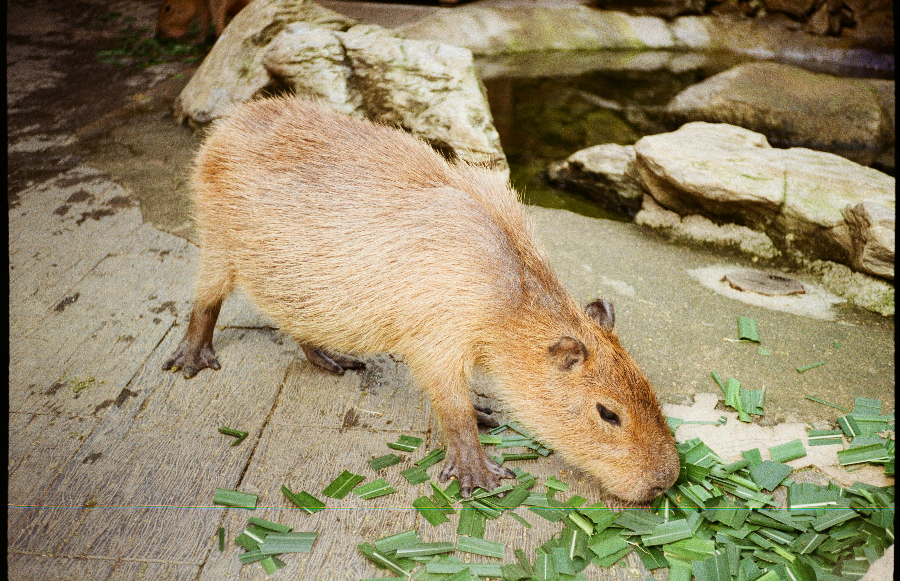
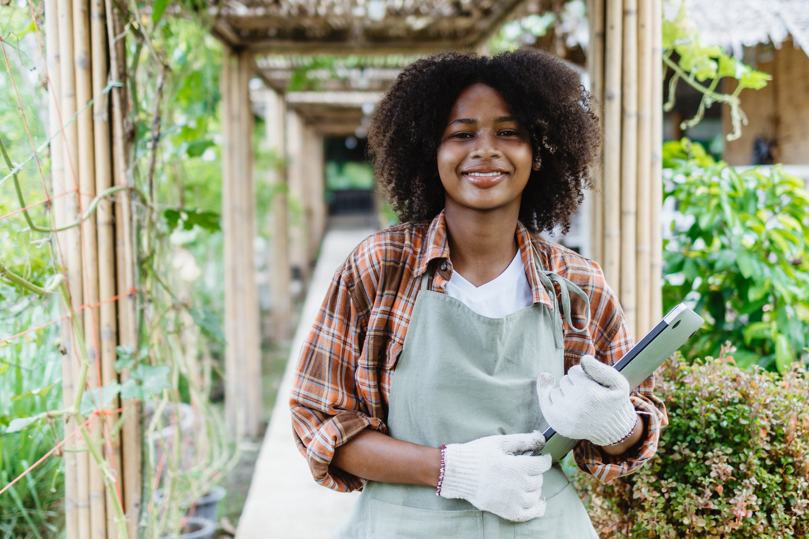

Capybara Connection began with a simple idea: create a welcoming space where people can slow down and experience meaningful moments with animals. In a world that often feels rushed and noisy, we’ve built a peaceful farm setting where guests can pause, breathe deeply, and enjoy the quiet joy of connecting with gentle, curious animals.
Our facility is home to seven rescued capybaras, along with goats, sheep, and rabbits. Each capybara in our care has a unique story, and providing a safe, enriched home for them is at the heart of everything we do. From spacious habitats and fresh produce to enrichment that encourages natural behaviors, their wellbeing always comes first.
As a nonprofit organization, we rely on community support to continue offering high-quality care and thoughtful, personal experiences for every guest. Every visit and donation directly supports the daily care and enrichment of our animals. Your support helps us continue expanding enrichment programs and improving our animals’ habitats for years to come.

Every visit to Capybara Connection is intentionally designed to feel relaxed, personal, and engaging. Whether you choose a Private Capybara Encounter or time in Capybara Commons, you’ll have the opportunity to connect with our animals in a calm and welcoming environment.
Our private encounters offer dedicated, guided time with two capybaras in a small-group setting, allowing guests to learn about their personalities and natural behaviors while enjoying safe, supervised interaction. Full access to Capybara Commons is included with every private encounter. In our open farm area, guests can meet the capybaras and their friendly animal neighbors in a warm, hands-on setting. We also offer sensory-friendly hours on Tuesdays, creating a quieter, lower-stimulation experience for those who prefer a more peaceful pace.
We hope each guest leaves feeling refreshed, inspired, and a little more connected to the animals and the natural world around them. Whether it’s your first visit or your fifth, there’s always something new to notice and appreciate.

